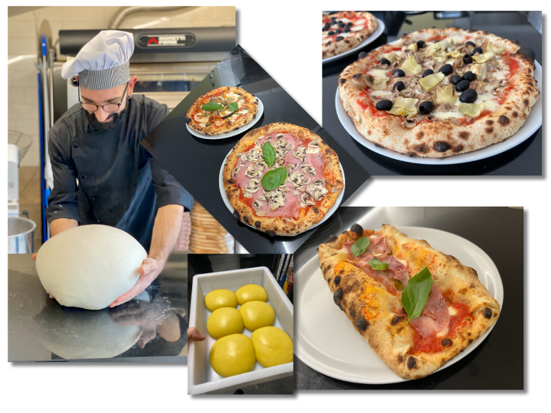
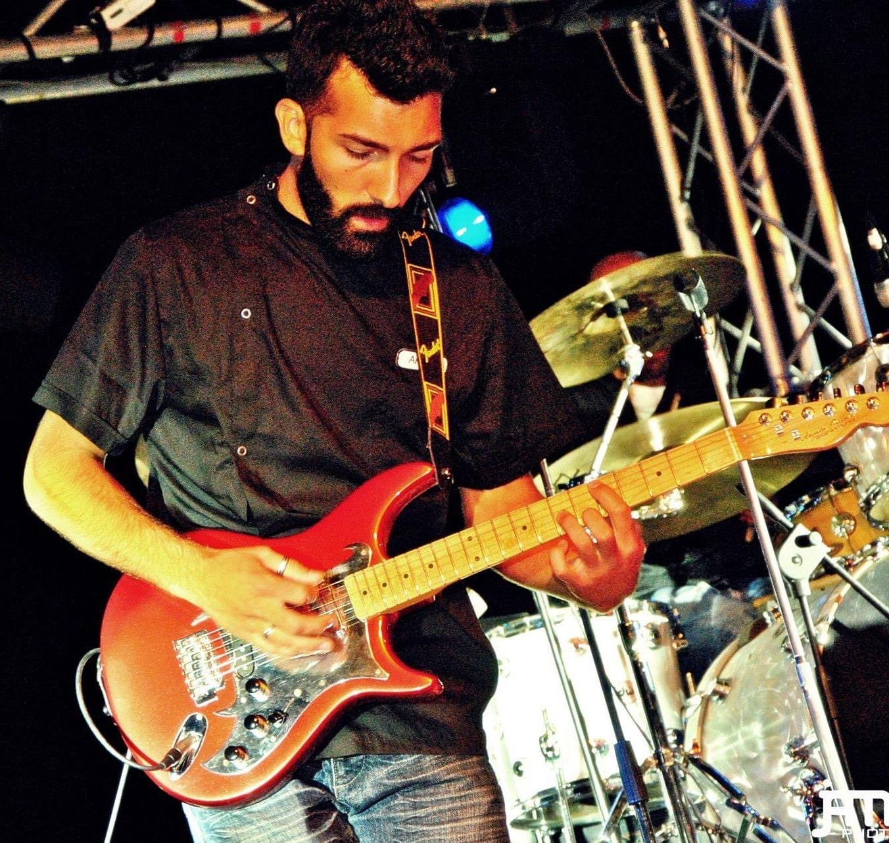
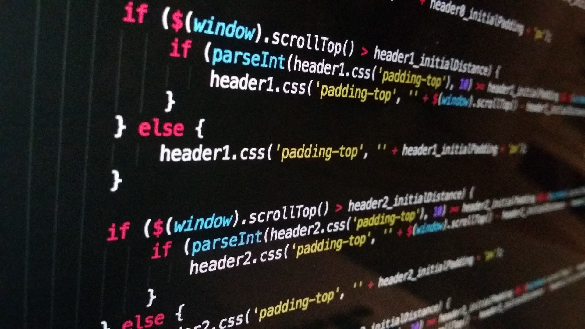
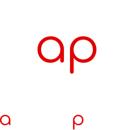

Commercialista · Programmatore Junior · Designer · Gastronomo
Chi sono
Sono una persona profondamente curiosa. Mi piace approfondire gli argomenti che reputo interessanti e sono costantemente alla ricerca di esperienze stimolanti che mi permettano di specializzarmi e di progredire nel mio percorso professionale. Un percorso che considero, in fondo, infinito, poiché credo fermamente che una persona non smetta mai di imparare. Le competenze che possiedo le ho acquisite attraverso lo studio e la sperimentazione diretta, cogliendo ogni opportunità significativa che la vita mi abbia offerto.
Ho lasciato il mio Paese d’origine, l’Italia, proprio perché nel luogo in cui vivevo mi sono sempre sentito limitato, come circondato da mura troppo strette per contenere il mio desiderio di crescita ed esperienze. Era un contesto orientato alla ricerca di certezze più che di opportunità, alla “comfort zone” piuttosto che al rischio. Io, invece, aspiravo a qualcosa di diverso. Desideravo un futuro migliore per i miei figli: non volevo che si trovassero a lavorare duramente per un salario modesto, privo di prospettive di crescita e di obiettivi chiari.
Dal momento in cui ho messo piede in Svizzera, nel 2016, il mio modo di vedere le cose è cambiato radicalmente. I miei orizzonti si sono ampliati e ho iniziato ad apprendere davvero molto. Ho studiato intensamente, a partire dalla lingua tedesca, che fino ad allora mi era completamente sconosciuta. Successivamente ho seguito numerosi corsi, informandomi costantemente su come potessi apprendere il più possibile e su come rafforzare le mie competenze.
Ho studiato UX Design, consapevole che il mondo digitale stesse ormai muovendosi in quella direzione. Siti web e software si stavano trasformando sempre più in applicazioni, pensate principalmente per l’utilizzo su smartphone. In seguito mi sono concentrato sulla grafica 3D e sul game design, un ambito che mi ha sempre affascinato. Ho fondato una società insieme a un socio, la SkinSoftware GmbH, nella quale mi occupavo di design e ho iniziato ad avvicinarmi anche al mondo della contabilità. Parallelamente ho acquisito solide competenze di programmazione, come dimostra questo sito, interamente sviluppato da me tramite codice.
In seguito si è presentata un’occasione speciale: ho avuto la possibilità di aprire un mio locale gastronomico, con la partecipazione e il supporto societario di mia moglie, la Pizza e Birri GmbH. Avendo conseguito la qualifica e il certificato di Gestore Gastronomico (necessario nel Cantone Argovia per l’apertura di un’attività nel settore), mi è stata offerta questa opportunità. Non sempre, però, le cose vanno come previsto: non tutti gli accordi sono chiari sin dall’inizio e non tutte le attività possono nascere senza un solido supporto economico alle spalle. Anche da questa esperienza ho tratto importanti insegnamenti, in particolare in ambito di accordi e dinamiche commerciali. Forti di circa vent’anni di esperienza nel settore gastronomico, ci siamo comunque lanciati in questa nuova avventura, che ci ha regalato ulteriore esperienza e consapevolezza. È stato proprio grazie a questo percorso che ho scoperto una mia predisposizione per la contabilità, elemento che mi ha spinto a intraprendere un nuovo cammino di studi in economia e finanza presso l’AKAD, una delle migliori scuole di Zurigo.
Ed eccomi qui: non demordo. Posso e voglio continuare a imparare ancora moltissime cose e sono curioso di scoprire cosa il futuro abbia in serbo per me. Dove mi porterà questa volta il mio percorso? La storia continua.
Qui puoi scaricare i miei diplomi e documenti di formazione
DiplomaLicenza Gastronomica
Corso di Tedesco
Corso ZHDK
Corso Unity
Trinity